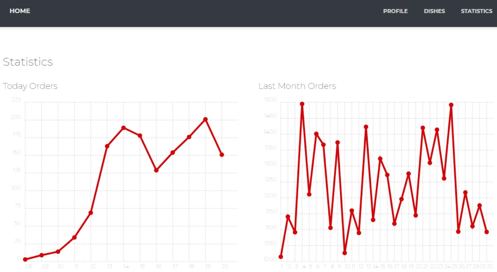
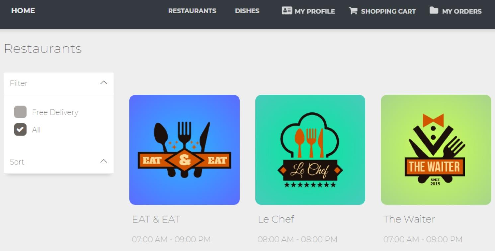
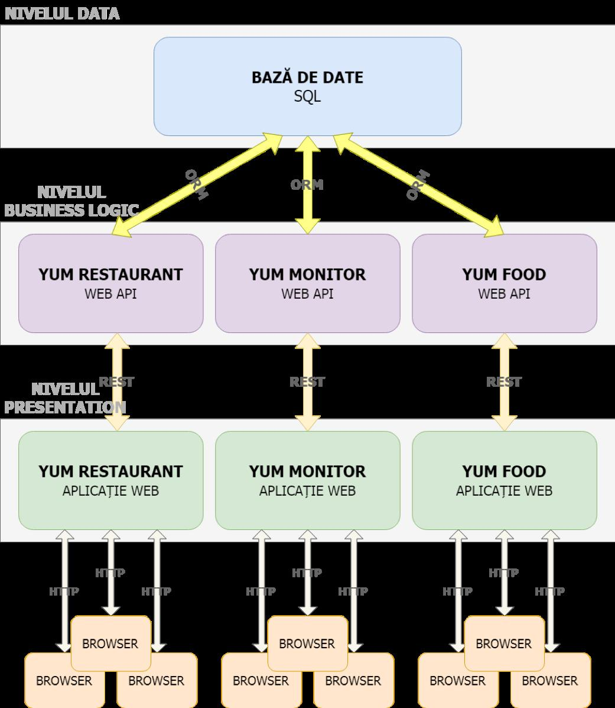
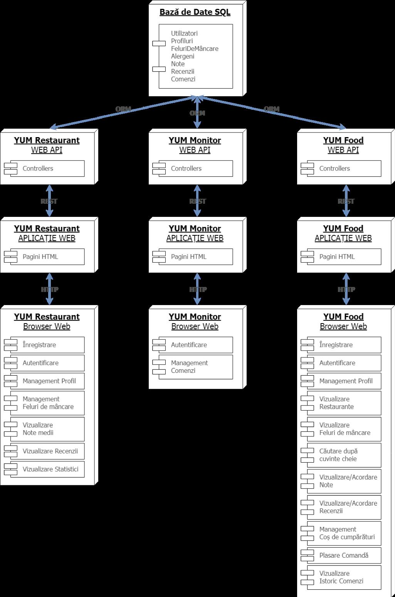
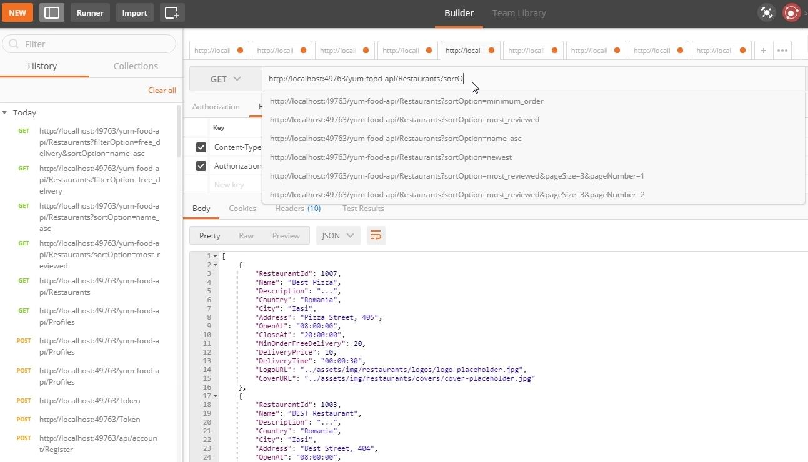

Data publicării: 06.06.2018
Autor articol: Sabin Buraga
Introducere
Materialul de față punctează aspectele importante în proiectarea, implementarea și exploatarea unei platforme Web destinate managementului datelor cu specific culinar. Sistemul descris mai jos reprezintă contribuția practică a absolventului Daniel Țoncu la lucrarea de licență (Țoncu, 2018) ce va susținută în luna iulie 2018 la Facultatea de Informatică a Universității Alexandru Ioan Cuza din Iași, România. Problematica lucrării se înscrie în aria mai largă dedicată afacerilor Web (e-business), aspectele generale fiind descrise în (Buraga, 2005) și (Davies et al., 2018).
Analizând restaurantele de pe piața autohtonă, le putem clasifica în 3 categorii:
- Restaurante care nu oferă o soluție software clienților săi;
- Restaurante care dețin un sit Web de prezentare, unde clienții pot găsi produse oferite de restaurant, informații despre servicii și date de contact;
- Restaurante care dețin un sit Web ce permite clienților să obțină date despre produsele oferite, inclusiv cu posibilitatea înregistrării introducând date personale și apoi efectuării de comenzi online.
O problemă majoră a restaurantelor din categoriile 1 și 2 este faptul că interacțiunea client-restaurant se bazează doar pe convorbiri telefonice. O altă problemă ce privește restaurantele din categoria 3 este faptul că un client ce are mai multe restaurante preferate, ar trebui să se înregistreze și să își introducă datele personale pentru fiecare dintre aplicațiile specifice fiecărui restaurant agreat.
O altă dificultate majoră, care se referă la toate categoriile de restaurante, este imposibilitatea efectuării unor operații precum:
- Căutare după cuvinte cheie (a unui restaurant, meniu, produs ș.a.);
- Afișare de articole, ordonate după preț, notă, numărul de evaluări, data adăugării etc.;
- Vizualizarea tuturor articolelor (produse, meniuri, oferte speciale) dintr-o categorie specificată.
Analizând problemele de mai sus, conchidem că avem nevoie de o soluție software care să integreze toate restaurantele, punând astfel la dispoziție facilități comune precum cele de a căuta articole, afișa articole din categoria specificată, afișa articole în ordinea specificată și toate acestea pe articolele tuturor restaurantelor aplicației. Soluția software trebuie să ofere și un sistem de gestiune al comenzilor – clienții pot plasa comenzi la oricare dintre restaurantele găsite în aplicație, urmând ca aceste comenzi să fie preluate de restaurantele corespunzătoare. De asemenea, soluția software trebuie să ofere posibilitatea de autentificare a clienților și introducere/editare a datelor personale.
Prezentarea soluției. Considerente arhitecturale
Așadar, s-a dezvoltat YUM Food – o platformă Web menită a integra informațiile referitoare la restaurantele dintr-o zonă geografică, punând la dispoziție clienților restaurantelor operații efectuate în mod unitar.
Platforma YUM Food constă din trei aplicații Web:
YUM Restaurant este o aplicație Web destinată restaurantelor, oferind o interfață prietenoasă unde managerii restaurantelor, în urma procesului de autentificare, pot gestiona datele de profil ale restaurantului și felurile de mâncare pe care le oferă restaurantul. De asemenea, aplicația oferă diverse statistici relevante, utile unui manager de unitate comercială de profil. Aceste statistici sunt exemplificate în captura-ecran următoare.

- YUM Monitor reprezintă o aplicație Web capabilă a gestiona în timp real comenzile de la clienți, urmând a fi procesate de personalul restaurantelor. Suplimentar, aplicația oferă posibilitatea actualizării statutului unei comenzi primite, astfel încât clientul care a efectuat comanda să poată urmări evoluția stării acesteia.
- YUM Food este o aplicație Web destinată clienților restaurantelor. În cadrul aplicației, fiecare utilizator are un profil, care conține date personale relevante și o colecție de alergeni (utilizatorul este avertizat dacă un fel de mâncare ales conține ingrediente la care are alergie – conform mulțimii de alergeni specificate). Utilizatorii, în urma procesului de autentificare, își pot actualiza datele din profil, pot naviga prin lista de restaurante disponibile și felurile de mâncare oferite de acestea – ordonate după criteriul specificat (preț, data adăugării, punctaj al recenziilor ș.a.). Desigur, utilizatorii pot adăuga feluri de mâncare în coșul de cumpărături și plasa comenzi către restaurante. De asemenea, utilizatorii pot acorda note și recenzii felurilor de mâncare și restaurantelor. Un exemplu de interacțiune cu această aplicație este furnizat în imaginea de mai jos.

Arhitectura generală – de tip multi-strat (N-tier), bazată pe servicii Web – e prezentată în schema de mai jos.

Aspecte vizând implementarea
În ceea ce privește componentele interne, se adoptă o abordare obiectuală implementată în limbajul C#, după cum se poate observa în figura alătură care menționează și funcționalitățile actuale ale platformei.

Pentru implementarea efectivă, s-a recurs la tehnologiile Microsoft .NET, în speță ASP.NET, Microsoft SQL Server folosit în conjuncție cu Entity Framework.
Paradigma folosită în dezvoltarea serviciilor Web interne este REST (REpresentational State Transfer), iar accesul la nivelul de date se realizează prin intermediul modelului ORM (Object Relational Mapping).
Crearea API-ului propriu – alinat practicilor în vigoare trasate de paradigma REST – s-a bazat pe suportul oferit de ASP.NET Web API. Un instantaneu privind testarea accesului la API este prezentat în figura alăturată.

Concluzii
Acest articol a punctat o serie de aspecte privind YUM Food (Țoncu, 2018), o suită de aplicații Web implementate în .NET în limbajul C#, pentru gestiunea datelor cu caracter culinar. Platforma YUM Food este proiectată pe niveluri, oferind astfel avantajul asigurării scalabilității. De asemenea, pe baza cunoștințelor dobândite la materia “Tehnologii Web” (Buraga, 2018), platforma este proiectată modular și generic, prezentând avantajul de a adăuga noi funcționalități fără a fi nevoiți să modificăm componentele deja existente.
Ca direcții de viitor, se pot menționa adăugarea unor mecanisme de caching pentru fiecare din nivelurile platformei, pentru a obține un plus de performanță. De asemenea, se intenționează dezvoltarea unei aplicații la nivel de client pentru dispozitive mobile de tip Android și iOS, plus găzduirea sistemului în “nori”, beneficiind astfel de avantajele oferite de Microsoft Azure.
O altă temă de cercetare viitoare este aceea privind studierea experienței utilizatorului în interacțiunea cu sistemul YUM Food, conform celor discutate în (Ryu & Lee, 2017).
Referințe bibliografice
- Buraga, S., Proiectarea siturilor Web. Design și funcționalitate (Ediția a doua), Polirom, 2005: http://www.slideshare.net/busaco/sabin-buraga-proiectarea-siturilor-web
- Buraga, S., Tehnologii Web, Facultatea de Informatică, Universitatea “Alexandru Ioan Cuza” din Iași, 2018: http://profs.info.uaic.ro/~busaco/teach/courses/web/web-film.html
- Davis, B. et al. Food and beverage management, Routledge, 2018.
- Ryu, K., Lee, J. S. “Examination of restaurant quality, relationship benefits, and customer reciprocity from the perspective of relationship marketing investments”. Journal of Hospitality & Tourism Research, 41 (1), 2017.
- Țoncu D., YUM Food: Gestionarea datelor cu specific culinar via servicii Web, Teză de licență, Facultatea de Informatică, Universitatea “Alexandru Ioan Cuza” din Iași, 2018.
- * * *, ASP.NET Web API, 2018: http://www.asp.net/web-api
- * * *, Entity Framework Documentation, 2018: http://docs.microsoft.com/en-us/ef/